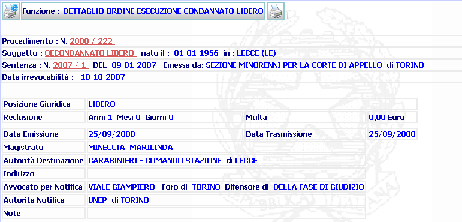

Per eseguire la generazione e la stampa
dell'Ordine di Esecuzione cliccare sul pulsante
 stampa del documento
stampa del documento
DETTAGLIO ORDINE ESECUZIONE: La funzione consente di avviare il processo di editing e stampa dell'Ordine di Esecuzione inserito con la funzione Emissione Ordine di Esecuzione.
LE MASCHERE VIDEO
La funzione in esame viene realizzata attraverso l'utilizzo di una maschera che riporta gli elementi descrittivi dell'ordine di esecuzione. La maschera riporta, nel titolo della funzione, la posizione giuridica del condannato.

COME FARE PER ...
|
Per eseguire la generazione e la stampa
dell'Ordine di Esecuzione cliccare sul pulsante
|
|
Dopo la Stampa il sistema ripropone la maschera del Dettaglio Ordine di Esecuzione per l'operazione di Validazione Documento |
CAMPI
Non sono presenti Campi da utilizzare.
PULSANTI
Oltre ai pulsanti orizzontali della maschera principale sono presenti i pulsanti di uso comune.
|
PULSANTE |
DESCRIZIONE |
|
|
Questo pulsante ha
lo scopo di avviare il processo di stampa. |
BOTTONI
Oltre ai comandi funzionali relativi al menù verticale non sono presenti nella maschera altri bottoni.
CONTROLLI
In questa maschera non sono effettuati controlli.